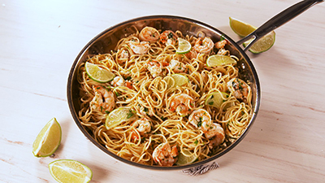

My Favorite Food!
Cilantro-Lime Shrimp Pasta

Ingredients
- 1/4 c. extra-virgin olive oil
- 2 tbsp. lime juice
- 1 tsp. ground cumin
- 1 lb. shrimp, peeled and deveined
- 3/4 lb. spaghetti
- 4 tbsp. butter, divided
- 3 cloves garlic, minced
- 1/2 tsp. red pepper flakes
- 1/4 c. low-sodium chicken broth
- 1/4 c. white wine
- 1/4 c. freshly chopped cilantro
- Lime slices, for serving
Directions
- In a medium bowl, whisk together olive oil, lime juice, and cumin. Add shrimp and toss to combine. Cover and refrigerate for 15 minutes or up to 4 hours.
- Before cooking shrimp, boil pasta: In a large pot of boiling salted water, cook pasta according to package instructions until al dente. Drain.
- Cook shrimp: In a large skillet over medium heat, heat 2 tablespoons butter. Add shrimp in a single layer and cook until pink and opaque, about 2 minutes per side. Remove shrimp from skillet.
- Add remaining 2 tablespoons butter to skillet. When melted, stir in garlic, and red pepper flakes and cook until fragrant, about 1 minute. Add chicken broth and white wine, and bring mixture to a simmer.
- Add cooked pasta and return shrimp to skillet. Toss everything together until evenly coated in sauce. Serve warm with cilantro and lime slices.
For more information check out this site